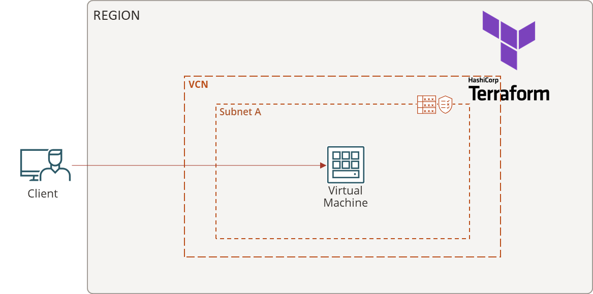
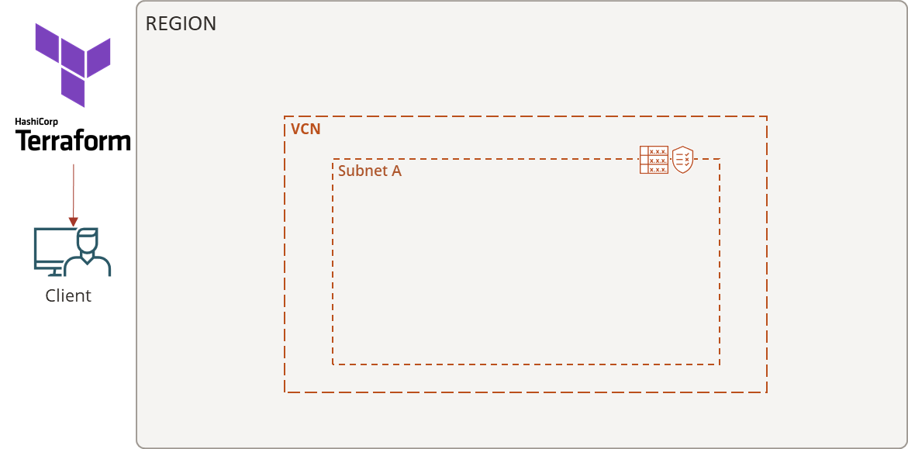
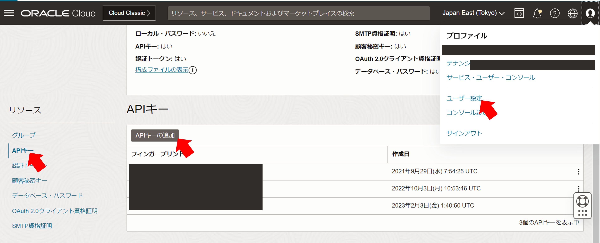
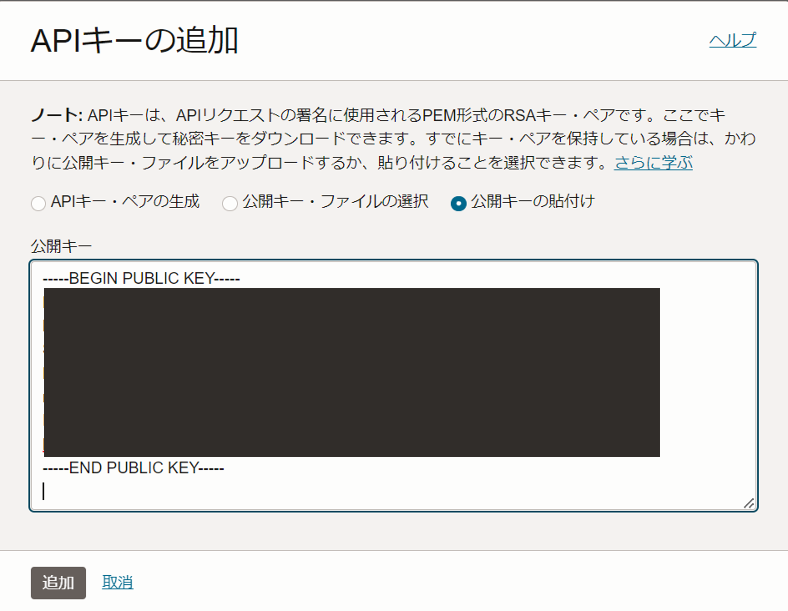
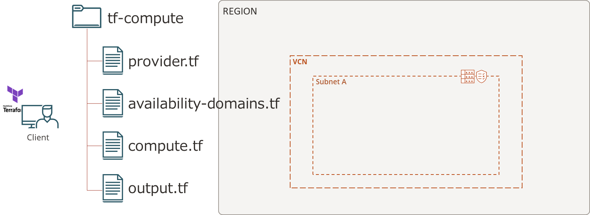
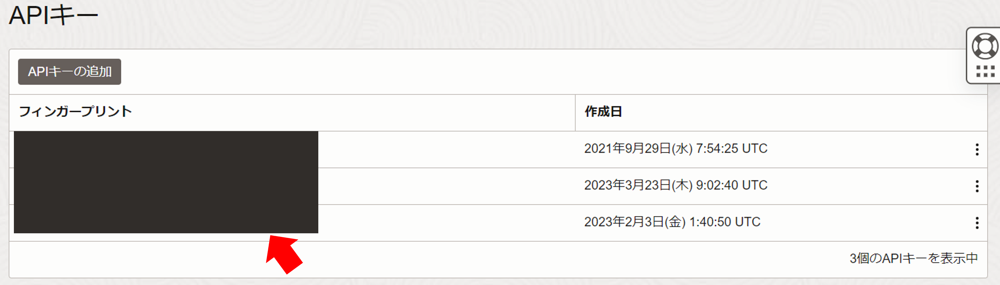
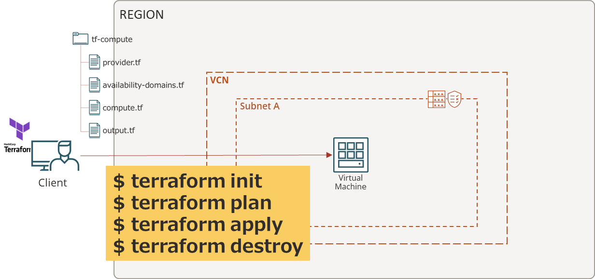

チュートリアル一覧に戻る : Oracle Cloud Infrastructure チュートリアル
terraformは、人間が読める設定ファイルで定義したリソースを自動でプロビジョニング処理するInfrastructure-as-code （IaC）を実現するサービスです。
terraformは複数のクラウドプロバイダを管理できるため、マルチクラウド環境で構築されたシステムなどを、簡単かつ効率的に管理することができます。
このチュートリアルでは、terraformのインストールをして実行環境を用意して簡単なリソースをプロビジョニングしていきます。
所要時間 : 約30分
前提条件 :
- OCIアカウントがあること
- MacOS、LinuxまたはWindows環境があること（このチュートリアルではOracle Linux VMを使います。）
- 操作を行うユーザが全てのリソースを読む権限を持っている事（to read all-resources in tenancy）
- VCNとサブネットが作成されている事
注意 : チュートリアル内の画面ショットについては Oracle Cloud Infrastructure の現在のコンソール画面と異なっている場合があります
1. Terraformとは？
概要
-
IaCについて
Infrastructure as Codeはサーバーやネットワークなどのインフラ構成をプログラムのようなコードで記述し、そのコードを用いてインフラ構成の管理やプロビジョニングの自動化を行うこと。 -
Terraformについて
TerraformはHashiCorp社が開発しているオーケストレーションツールの一つ。 インフラストラクチャのライフサイクルを自動化する構成管理ツール。
本チュートリアルではTerraformをインストールして、インスタンスを作成するところまでを行います。

2．Terraform環境の構築
Terraformを実行するための環境を準備します。Oracle Linux8で作成してます。 
Terraformのインストール
- 一時ディレクトリの作成
mkdir temp cd temp/ - zipファイルのダウンロード
wget https://releases.hashicorp.com/terraform/1.4.2/terraform_1.4.2_linux_amd64.zip - 解凍してフォルダを移動
unzip terraform_1.4.2_linux_amd64.zip sudo mv terraform /usr/local/bin - Terraformのバージョンを確認
terraform -v
RSAキーの作成
- .ociディレクトリの作成
mkdir $HOME/.oci - 秘密鍵の作成 <your-rsa-key-name>には適当な名前を入力
openssl genrsa -out $HOME/.oci/<your-rsa-key-name>.pem 2048 - 権限の変更
chmod 600 $HOME/.oci/<your-rsa-key-name>.pem - 公開キーの作成
openssl rsa -pubout -in $HOME/.oci/<your-rsa-key-name>.pem -out $HOME/.oci/<your-rsa-key-name>_public.pem - 公開キーをコンソールに登録
cat $HOME/.oci/<your-rsa-key-name>_public.pem -
ユーザー設定 → APIキー→ 公開キーの追加 
- 公開キーの貼付け→ BEGIN PUBLIC KEYおよびEND PUBLIC KEYの行を含む値を貼り付け→ 追加

3. スクリプトの作成
ここからはTerraformでリソースや認証情報などを.tfファイルに記述していきます。 前提として、ユーザーがリソースを扱えることとVCNとサブネットがある状態から、その上のインスタンスをTerraformで構築する想定をします。
インスタンスを作成する際にはtf-computeというディレクトリを作成し、そのディレクトリ配下に4つのtfファイルを作成します。 
必要なOCID情報の収集
ここではスクリプトに記述する際に必要になる情報を集めていきます。
#メモに貼り付け用
テナンシOCID：
コンパートメントOCID：
ユーザーOCID：
フィンガープリント：
リージョン名：例（ap-tokyo-1 or ap-osaka-1）
API署名用のRSAキーの場所：例（/home/opc/.oci/<your-rsa-key-name>.pem）
SSH公開鍵の場所：
インスタンスシェイプ：
インスタンスイメージOCID：
サブネットのOCID：
フィンガープリントはAPIキーの場所にあります。 
リージョンは東京と大阪のリージョン名
東京：”ap-tokyo-1”
大阪：”ap-osaka-1”
インスタンスに接続する sshキーの作成
インスタンスに公開鍵を登録するために鍵を作成します。
ssh-keygen -t rsa -N "" -b 2048 -C <your-ssh-key-name> -f <your-ssh-key-name>
公開鍵の場所もメモしておきましょう。
後ほど、<ssh-public-key-path>に公開鍵の場所を登録します。
また、この秘密鍵を使用してインスタンスにアクセスできます。
インスタンス情報の収集
シェイプの選択 以下のサイトからシェイプを選びます。
本チュートリアルではVM.Standard2.1を使用します。
インスタンスイメージOCIDの収集
以下のサイトからインスタンスに使用したいイメージを選択します。
本チュートリアルではUbuntuを使用します。
「Ubuntu 20.04」 →「Canonical-Ubuntu-20.04-2022.08.15-0」 → プロビジョニングするリージョンの OCIDをコピーします。
サブネットOCIDの収集
インスタンスをプロビジョニングする際のサブネットOCIDをコピーします。
認証スクリプトの作成 provider.tf
provider.tfファイルを作成し、認証情報を記述していきます。 先ほどメモした情報を入れて、保存してください。
provider "oci" {
tenancy_ocid = "<tenancy-ocid>"
user_ocid = "<user-ocid>"
private_key_path = "<rsa-private-key-path>"
fingerprint = "<fingerprint>"
region = "<region-identifier>"
}
AD指定スクリプトの作成 availability-domains.tf
availability-domains.tfファイルを作成し、ADに関する情報を記述していきます。
compartment_id = “<tenancy-ocid>“にはコンピュートをプロビジョニングするコンパートメントOCIDを入れてください。ルートコンパートメントの場合はテナンシOCIDを入力してください。
# Source from https://registry.terraform.io/providers/oracle/oci/latest/docs/data-sources/identity_availability_domains
# <tenancy-ocid> is the compartment OCID for the root compartment.
# Use <tenancy-ocid> for the compartment OCID.
data "oci_identity_availability_domains" "ads" {
compartment_id = "<tenancy-ocid>"
}
コンピュートインスタンススクリプトの作成 compute.tf
compute.tfファイルを作成し、コンピュートに関する情報を記述していきます。
resource "oci_core_instance" "ubuntu_instance" {
# Required
availability_domain = data.oci_identity_availability_domains.ads.availability_domains[0].name
compartment_id = "<compartment-ocid>"
shape = "VM.Standard2.1"
source_details {
source_id = "<source-ocid>"
source_type = "image"
}
# Optional
display_name = "<your-ubuntu-instance-name>"
create_vnic_details {
assign_public_ip = true
subnet_id = "<subnet-ocid>"
}
metadata = {
ssh_authorized_keys = file("<ssh-public-key-path>")
}
preserve_boot_volume = false
}
出力情報スクリプトの作成 output.tf
output.tfファイルを作成し、出力に関する情報を記述していきます。
# Outputs for compute instance
output "public-ip-for-compute-instance" {
value = oci_core_instance.ubuntu_instance.public_ip
}
output "instance-name" {
value = oci_core_instance.ubuntu_instance.display_name
}
output "instance-OCID" {
value = oci_core_instance.ubuntu_instance.id
}
output "instance-region" {
value = oci_core_instance.ubuntu_instance.region
}
output "instance-shape" {
value = oci_core_instance.ubuntu_instance.shape
}
output "instance-state" {
value = oci_core_instance.ubuntu_instance.state
}
output "instance-OCPUs" {
value = oci_core_instance.ubuntu_instance.shape_config[0].ocpus
}
output "instance-memory-in-GBs" {
value = oci_core_instance.ubuntu_instance.shape_config[0].memory_in_gbs
}
output "time-created" {
value = oci_core_instance.ubuntu_instance.time_created
}
# The "name" of the availability domain to be used for the compute instance.
output "name-of-first-availability-domain" {
value = data.oci_identity_availability_domains.ads.availability_domains[0].name
}
4. コンピュートインスタンスのプロビジョニング
Terraformスクリプトを実行してコンピュートインスタンスをプロビジョニングして削除していきます。 
初期化 terraform init
tf-computeディレクトリの作業ディレクトリを初期化します。
terraform init
初期化できると、以下のような出力がされます。
出力例：
Terraform has been successfully initialized!
計画 terraform plan
インフラストラクチャの変更を確認します。
terraform plan
出力例：
・・・
Changes to Outputs:
+ instance-OCID = (known after apply)
+ instance-OCPUs = (known after apply)
+ instance-memory-in-GBs = (known after apply)
+ instance-name = "ubuntu_instance"
+ instance-region = (known after apply)
+ instance-shape = "VM.Standard2.1"
+ instance-state = (known after apply)
+ name-of-first-availability-domain = "TGjA:AP-TOKYO-1-AD-1"
+ public-ip-for-compute-instance = (known after apply)
+ time-created = (known after apply)
適用 terraform apply
スタックの変更計画に基づいてインフラストラクチャの変更を実際に適用します。
途中で確認を求められたら「yes」を入力してください
terraform apply
「Apply complete! Resources: …」と出たらプロビジョニングされていますのでコンソールでも確認しましょう。
以下のコマンドでも確認することができます。
terraform show
破棄 terraform destroy
スタックにあるインフラストラクチャを削除します。
terraform destroy
コンソールでもコンピュートインスタンスが削除されていることを確認してください。
Terraformでコンピュートインスタンスをプロビジョニングして削除するまでの一連の流れを説明しました。
以上で、この章の作業は終了です。
チュートリアル一覧に戻る : Oracle Cloud Infrastructure チュートリアル